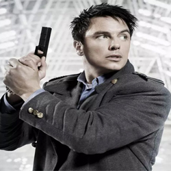

| Home | The Doctors | The Companions | The Villains |
|
|||
|
Jack Harkness HomepageCaptain Jack Harkness is a fictional character played by John Barrowman in Doctor Who and its spin-off series, Torchwood. The character first appears in the 2005 Doctor Who episode "The Empty Child" and subsequently features in the remaining episodes of the 2005 series as a companion to the series' protagonist, the Doctor. Subsequent to this, Jack became the central character in the adult-themed Torchwood, which aired from 2006 to 2011. Barrowman also reprised the role for guest appearances in Doctor Who in its 2007 series and 2008 series, as well as the two part special The End of Time. In contrast to the Doctor, Jack is more of a conventional action hero, as well as outwardly flirtatious and capable of acts which the Doctor would view as less than noble. In the programme's narrative, Jack begins as a time traveller and former con man from the 51st century, who comes to travel with theNinth Doctor (Christopher Eccleston) and his companion Rose (Billie Piper). In the 2005 finale however, Jack dies and is resurrected by Rose Tyler when she absorbs the immense powers of the time vortex. As a result of this, Jack becomes immortal and is stranded on 19th-century Earth. Here, he becomes a member of Torchwood, a British organization dedicated to combating alien threats. He spends over a century waiting to reunite with the Doctor, over which time he becomes Torchwood's leader. Eventually, he reunites with the Tenth Doctor (David Tennant) for several appearances inDoctor Who. Aspects of the character's backstory—both prior to meeting the Doctor, and during his many decades living on Earth—are gradually revealed over Torchwood (and to a lesser extent, Doctor Who) through the use of flashback scenes and expository dialogue. Jack is the first openly non-heterosexual character in the history of televised Doctor Who. The popularity of the character amongst multiple audiences directly influenced the development of the spin-off series Torchwood. The character became a figure of the British public consciousness, rapidly gaining fame for portrayer John Barrowman. As an ongoing depiction of bisexuality in mainstream British television, the character became a role model for young gay and bisexual people in the UK. Jack is featured in various Doctor Who and Torchwood books and has action figures created in his likeness. ] |